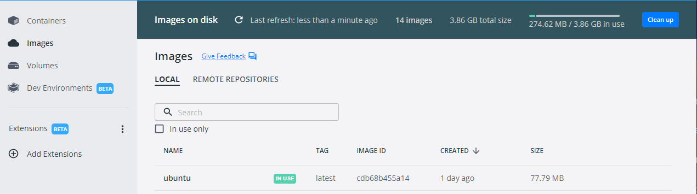
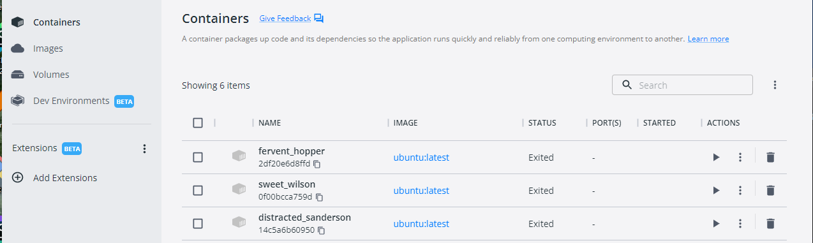
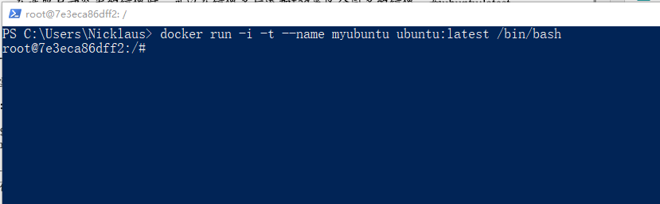
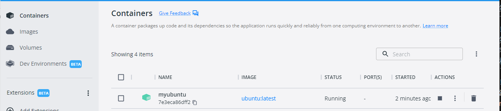
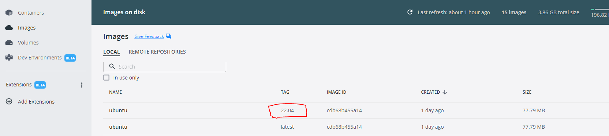

Docker命令初探
前提：计算机上已经安装了Docker
Docker基本命令
创建容器
docker run干了两件事：一是拉取镜像，二是启动该镜像得到容器
- 创建容器：eg.
docker run ubuntu echo "Hello ubuntu"第一次运行发现本地没有PS C:\Users\Nicklaus> docker run ubuntu echo "Hello ubuntu" Unable to find image 'ubuntu:latest' locally latest: Pulling from library/ubuntu 301a8b74f71f: Pull complete Digest: sha256:7cfe75438fc77c9d7235ae502bf229b15ca86647ac01c844b272b56326d56184 Status: Downloaded newer image for ubuntu:latest Hello ubuntuubuntu的镜像，所以会去自动下载,通过Docker Desktop可视化如下可见:  第二次运行本地已经有了该镜像，所以会直接运行，生成容器对象，完成输出后直接退出。容器本质上就是一个进程，完成echo "Hello ununtu"之后，容器就终止运行了，我运行了三次上面的命令，结果如下图所示：  - 创建容器，并为其指定相应的参数：
docker run -i -t --name myubuntu ubuntu:latest /bin/bash- -i: 使用交互模式，始终保持输入流开放
- -t: 分配一个伪终端，即可在容器中利用打开的伪终端进行交互操作
- – name指定启动的容器的名字，不指定Docker会为容器随机分配一个名字。

如图所示生成了一个可输入命令的伪终端。

如图所示,在Docker Desktop中可以看到我们刚才创建的名为
myubuntu的容器，其状态为Running第二次运行上述命令，无法成功，提示信息如下：PS C:\Users\Nicklaus> docker run -i -t --name myubuntu ubuntu:latest /bin/bash root@7e3eca86dff2:/# exit exit PS C:\Users\Nicklaus> docker run -i -t --name myubuntu ubuntu:latest /bin/bash docker: Error response from daemon: Conflict. The container name "/myubuntu" is already in use by container "7e3eca86dff29245040b471653cbbf7cf76f247b3f8a18d4155c8a3e17ef183a". You have to remove (or rename) that container to be able to reuse that name. See 'docker run --help'. PS C:\Users\Nicklaus>
启动容器
在创建容器章节已经看到，docker run命令是新建一个容器来运行，对于已经存在的容器，是不可以再次执行该命令来运行的。而启动容器的命令是：docker start
还是以上面的myubuntu容器而言，当其关闭后，运行命令docker start myubuntu，会启动该容器，显示结果如下：
PS C:\Users\Nicklaus> docker start myubuntu
myubuntu
在Docker Desktop中会看到容器的运行状态为：Running
启动容器并打开交互模式
PS C:\Users\Nicklaus> docker start -i myubuntu
root@7e3eca86dff2:/#
重启容器
PS C:\Users\Nicklaus> docker restart myubuntu
myubuntu
重启命令不支持-i
停止容器
PS C:\Users\Nicklaus> docker stop myubuntu
myubuntu
在Docker Desktop中会看到容器的运行状态为：Exited
Docker仓库
Docker仓库主要存储各个容器的镜像。Docker Hub是Docker公司在互联网上提供的一个镜像仓库，提供镜像的公有与私有存储服务，是用户最主要的镜像来源。用户也可以自行搭建私有服务器来实现镜像仓库的功能。
拉取镜像
- 从官方Hub拉取镜像
不管你本地是否之前已经存在该镜像，都会如下输出
PS C:\Users\Nicklaus> docker pull ubuntu Using default tag: latest latest: Pulling from library/ubuntu Digest: sha256:7cfe75438fc77c9d7235ae502bf229b15ca86647ac01c844b272b56326d56184 Status: Image is up to date for ubuntu:latest docker.io/library/ubuntu:latest - 从官方Hub拉取指明"Ubuntu 22.04"tag的镜像
镜像地址：https://hub.docker.com/_/ubuntu/tags?page=1&ordering=last_updated
拉取成功后在Docker Desktop看到的结果如下：  TAG=latest是之前我们拉取的最新版本的ubuntu。
PS C:\Users\Nicklaus> docker pull ubuntu:22.04 22.04: Pulling from library/ubuntu Digest: sha256:7cfe75438fc77c9d7235ae502bf229b15ca86647ac01c844b272b56326d56184 Status: Downloaded newer image for ubuntu:22.04 docker.io/library/ubuntu:22.04
推送镜像
可以将本地的image或者repository推送到Docker Hub的公共或者私有镜像库，以及私有服务器。
推送命令：docker push [OPTIONS] NAME:[:TAG]
eg. docker push klaus/ubuntu
镜像管理
- 查看主机上的镜像，默认列出最顶层镜像，可使用-a显示所有镜像
其中
PS C:\Users\Nicklaus> docker images REPOSITORY TAG IMAGE ID CREATED SIZE ubuntu 22.04 cdb68b455a14 27 hours ago 77.8MB ubuntu latest cdb68b455a14 27 hours ago 77.8MB etcd-practice-etcd latest bc270dce5f05 7 days ago 158MB mall-golang latest 0c28bf7a95a6 2 weeks ago 1.5GB mall-etcd latest 65d3db4c6859 2 weeks ago 185MB mall-mysql latest bd15c58a9e28 2 weeks ago 433MB mall-prometheus latest a880a41f8d3e 2 weeks ago 390MB mall-redis latest 31a882cf0d4f 2 weeks ago 110MB mall-grafana latest 85414db8ae9e 3 weeks ago 294MB mall-dtm latest 1719fad48bae 3 weeks ago 59.3MB mall-redis-manage latest 5ed4a568934a 3 weeks ago 203MB mall-mysql-manage latest 487770c62394 5 months ago 510MB mall-jaeger latest 10068bd8b974 11 months ago 59.1MB etcd-practice-etcd-manage latest 0a37ce32f53f 2 years ago 38.8MB mall-etcd-manage latest 0a37ce32f53f 2 years ago 38.8MBubuntu:latest与ubuntu:22.04是经过上面步骤新增的镜像。mall-*,与etcd-*开头的镜像是我本地构建本地项目时的拉取并自命名的远程镜像。etcd-*开头的镜像与容器的容器可以参见我的另一篇文章：Windows平台部署etcd到Docker - 删除镜像
命令：
docker rmi [OPTIONS] IMAGE [IMAGE...],如果基于镜像启动的容器存在，无法直接删除，需要先删除容器，但是可以使用-f标记强行删除 - 删除容器
命令：
docker rm [OPTIONS] CONTAINER [CONTAINER...]
容器运维
- 连接容器，观察容器运行情况或与容器的主进程进行交互：
docker attach [OPTIONS] CONTAINER - 查看镜像和容器的详细信息，默认列出全部信息：
docker inspect [OPTIONS] CONTAINER|IMAGEeg.docker inspect etcd-practice-etcd运行结果如下：PS C:\Users\Nicklaus> docker inspect etcd-practice-etcd [ { "Id": "sha256:bc270dce5f058908f7e530979afcc3b1e7b378218c34c77e07ca2c357c082706", "RepoTags": [ "etcd-practice-etcd:latest" ], "RepoDigests": [], "Parent": "", "Comment": "buildkit.dockerfile.v0", "Created": "2022-10-19T00:25:41.924600839Z", "Container": "", "ContainerConfig": { "Hostname": "", "Domainname": "", "User": "", "AttachStdin": false, "AttachStdout": false, "AttachStderr": false, "Tty": false, "OpenStdin": false, "StdinOnce": false, "Env": null, "Cmd": null, "Image": "", "Volumes": null, "WorkingDir": "", "Entrypoint": null, "OnBuild": null, "Labels": null }, "DockerVersion": "", "Author": "", "Config": { "Hostname": "", "Domainname": "", "User": "1001", "AttachStdin": false, "AttachStdout": false, "AttachStderr": false, "ExposedPorts": { "2379/tcp": {}, "2380/tcp": {} }, "Tty": false, "OpenStdin": false, "StdinOnce": false, "Env": [ "PATH=/opt/bitnami/common/bin:/opt/bitnami/etcd/bin:/usr/local/sbin:/usr/local/bin:/usr/sbin:/usr/bin:/sbin:/bin", "HOME=/", "OS_ARCH=amd64", "OS_FLAVOUR=debian-11", "OS_NAME=linux", "APP_VERSION=3.5.5", "BITNAMI_APP_NAME=etcd", "ETCDCTL_API=3" ], "Cmd": [ "/opt/bitnami/scripts/etcd/run.sh" ], "Image": "", "Volumes": null, "WorkingDir": "/opt/bitnami/etcd", "Entrypoint": [ "/opt/bitnami/scripts/etcd/entrypoint.sh" ], "OnBuild": null, "Labels": { "maintainer": "Leebai <runningriven@gmail.com>", "org.opencontainers.image.authors": "https://bitnami.com/contact", "org.opencontainers.image.description": "Application packaged by Bitnami", "org.opencontainers.image.ref.name": "3.5.5-debian-11-r12", "org.opencontainers.image.source": "https://github.com/bitnami/containers/tree/main/bitnami/etcd", "org.opencontainers.image.title": "etcd", "org.opencontainers.image.vendor": "VMware, Inc.", "org.opencontainers.image.version": "3.5.5" }, "Shell": [ "/bin/bash", "-o", "pipefail", "-c" ] }, "Architecture": "amd64", "Os": "linux", "Size": 158039302, "VirtualSize": 158039302, "GraphDriver": { "Data": { "LowerDir": "/var/lib/docker/overlay2/707ca6f403abc7d02d4bac86155d41b95ee602168fc9ba02d81181882ba877a1/diff", "MergedDir": "/var/lib/docker/overlay2/8d43689a32f3a5fecce5c0de56f9f21433816f8b099deab3aca9a4735b470b9b/merged", "UpperDir": "/var/lib/docker/overlay2/8d43689a32f3a5fecce5c0de56f9f21433816f8b099deab3aca9a4735b470b9b/diff", "WorkDir": "/var/lib/docker/overlay2/8d43689a32f3a5fecce5c0de56f9f21433816f8b099deab3aca9a4735b470b9b/work" }, "Name": "overlay2" }, "RootFS": { "Type": "layers", "Layers": [ "sha256:877c59cba30815073ef56303b1b951f0e3e656a4c6170091e66bf53a1973c0c8", "sha256:5de0998f93c9d611285c9cd4cc01021b1f546feccbe325dfa03fa7b28f83e09f" ] }, "Metadata": { "LastTagTime": "0001-01-01T00:00:00Z" } } ] - 查看容器相关信息：
docker ps,默认只显示正在运行的容器的信息。PS C:\Users\Nicklaus> docker ps CONTAINER ID IMAGE COMMAND CREATED STATUS PORTS NAMES d1a4e95849cd etcd-practice-etcd-manage "/bin/sh -c './etcdk…" 43 hours ago Up 2 hours 0.0.0.0:8080->8080/tcp etcd-practice-etcd-manage-1 497c8713629c etcd-practice-etcd "/opt/bitnami/script…" 43 hours ago Up 2 hours 0.0.0.0:2379->2379/tcp, 2380/tcp etcd-practice-etcd-1
comments powered by Disqus